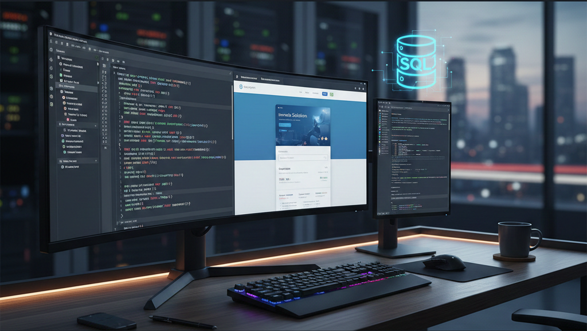

Ivan Cazares
Computer Programmer Analyst
I am a dedicated computer programmer analyst focused on delivering high-quality web applications and software solutions. My expertise spans the full stack, with proficiency in crafting responsive and dynamic user interfaces using HTML, CSS, and JavaScript.
I am highly skilled in back-end development, including data design, manipulation, and optimization using SQL Server, and I am comfortable deploying and managing applications within Linux environments. I am passionate about coding, problem-solving, and embracing new technology trends. Furthermore, my background in Level 1 and 2 IT support provides me with a unique perspective on user needs and system maintenance.
Programming Languages & Tools
- C#
- SQL Server
- Java
- JavaScript
- Python
- HTML / CSS
- R